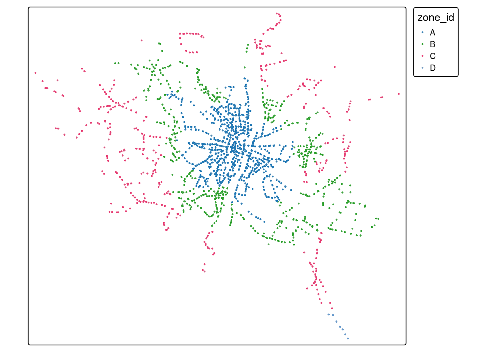

import pandas as pd
from shapely import Point
import geopandas as gpdGeographic data analysis in R and Python: comparing code and outputs for vector data
posts
rstats
python
Robin Lovelace ![]()
Anita Graser
Michael Dorman
Jakub Nowosad
Introduction
In this blog post, we talk about our experience teaching R and Python for geocomputation. The focus of the blog post is on geographic vector data, meaning points, lines, polygons (and their ‘multi’ variants) and the attributes associated with them. Geographic data analysis is a broad topic and in a later post we will cover raster data, meaning gridded data such as satellite images.
The context of this blog post is the OpenGeoHub Summer School 2023 which has courses on R, Python and Julia. The size and the diversity of the event has grown over the years. Noting that many events focus on just one language, and the advantages of diversity of languages and approaches, we wanted to follow-up in a blog post that could be useful to others.
OpenGeoHub 2023 was also a unique chance for the authors of the in-progress open source book, Geocomputation with Python to meet in person: the first time we have all been in one place at the same time.
The post is based on the following lecture notes, which we recommend checking out for deeper dives into the R and Python implementations of geocomputation:
Comparing R and Python for vector geographic data analysis
Loading packages
We will start by loading core packages for working with geographic vector and attribute data. See detailed description of R and Python implementations in the respective lecture note sections.
library(sf)
library(tidyverse)
library(tmap)Creating geographic data
The following commands create geographic datasets ‘from scratch’ representing coordinates of a the faculty where the Summer School takes place, and few hotels, in Poznan, Poland. Most projects start with pre-generated data, but it’s useful to create datasets to understand data structures.
poi = gpd.GeoDataFrame([
{"name": "Faculty", "geometry": Point(16.9418, 52.4643)},
{"name": "Hotel ForZa", "geometry": Point(16.9474, 52.4436)},
{"name": "Hotel Lechicka", "geometry": Point(16.9308, 52.4437)},
{"name": "FairPlayce", "geometry": Point(16.9497, 52.4604)},
], crs=4326)poi_df <- tribble(
~name, ~lon, ~lat,
"Faculty", 16.9418, 52.4643,
"Hotel ForZa", 16.9474, 52.4436,
"Hotel Lechicka", 16.9308, 52.4437,
"FairPlayce", 16.9497, 52.4604
)
poi_sf <- sf::st_as_sf(poi_df, coords = c("lon", "lat"), crs = "EPSG:4326")Downloading data
The following commands download data from the internet.
import urllib.request
import zipfile
import os
u = "https://github.com/Robinlovelace/opengeohub2023/releases/download/data/data.zip"
f = os.path.basename(u)
if not os.path.exists("data"):
urllib.request.urlretrieve(u, f)('data.zip', <http.client.HTTPMessage object at 0x7f5f7f50afd0>)u <- "https://github.com/Robinlovelace/opengeohub2023/releases/download/data/data.zip"
f <- basename(u)
if (!dir.exists("data")) {
download.file(u, f)
}Unzipping data
Unzip the zipfile in R and Python as follows.
with zipfile.ZipFile(f, 'r') as zip_ref:
zip_ref.extractall()unzip(f)Reading and printing geographic data
As shown below, Python and R code to import a shapefile are similar. Note: we recommend using open file formats such as GeoPackage (.gpkg), as outlined in Geocomputation with R and Geocomputation with Python.
Note also that we read directly from the ZIP file thanks to the GDAL Virtual File System.
pol_all = gpd.read_file("zip://data.zip!data/osm/gis_osm_transport_a_free_1.shp")
pol_all osm_id ... geometry
0 27923283 ... POLYGON ((16.84088 52.42479, 16.84112 52.42511...
1 28396243 ... POLYGON ((16.9675 52.32743, 16.96802 52.32807,...
2 28396249 ... POLYGON ((16.98029 52.32398, 16.98038 52.32409...
3 28396250 ... POLYGON ((16.97407 52.32418, 16.9742 52.32433,...
4 30164579 ... POLYGON ((16.71011 53.16458, 16.71041 53.16478...
.. ... ... ...
277 1073517768 ... POLYGON ((16.83966 51.60933, 16.83996 51.60941...
278 1098015810 ... POLYGON ((16.90579 52.43677, 16.90589 52.43672...
279 1101813658 ... POLYGON ((16.52227 52.34424, 16.5223 52.34425,...
280 1146503680 ... POLYGON ((16.90591 52.42877, 16.90593 52.42878...
281 1157127550 ... POLYGON ((18.0706 51.74824, 18.07062 51.74826,...
[282 rows x 5 columns]pol_all <- sf::read_sf("/vsizip/data.zip/data/osm/gis_osm_transport_a_free_1.shp")
pol_allSimple feature collection with 282 features and 4 fields
Geometry type: POLYGON
Dimension: XY
Bounding box: xmin: 15.76877 ymin: 51.42587 xmax: 18.51031 ymax: 53.52821
Geodetic CRS: WGS 84
# A tibble: 282 × 5
osm_id code fclass name geometry
<chr> <int> <chr> <chr> <POLYGON [°]>
1 27923283 5656 apron <NA> ((16.84088 52.42479, 16.…
2 28396243 5656 apron <NA> ((16.9675 52.32743, 16.9…
3 28396249 5656 apron <NA> ((16.98029 52.32399, 16.…
4 28396250 5656 apron <NA> ((16.97407 52.32418, 16.…
5 30164579 5656 apron <NA> ((16.71011 53.16458, 16.…
6 32225811 5601 railway_station Czerwonak ((16.9798 52.46868, 16.9…
7 36204378 5622 bus_station <NA> ((16.95469 52.40964, 16.…
8 50701732 5651 airport Lądowisko Poznań-Be… ((17.19788 52.53491, 17.…
9 55590985 5622 bus_station Dworzec PKS-stanowi… ((17.20243 52.80927, 17.…
10 56064358 5651 airport Port lotniczy Zielo… ((15.76877 52.13175, 15.…
# ℹ 272 more rowsNote: in both R and Python, you can read-in the dataset from the URL in a single line of code without first downloading the zip file, although the syntax is different, with R using GDAL’s /vsicurl/ character string and Python using the zip+ syntax.
pol_all = gpd.read_file("zip+" + u + "/data/osm/gis_osm_transport_a_free_1.shp")
pol_alluz <- paste0("/vsizip//vsicurl/", u, "/data/osm/gis_osm_transport_a_free_1.shp")
pol_all <- sf::read_sf(uz)Subsetting by attributes
The following commands select a subset of the data based on attribute values (looking for a specific string in the name column).
pol = pol_all[pol_all['name'].str.contains('Port*.+Poz', na=False)]
pol osm_id ... geometry
116 342024881 ... POLYGON ((16.8004 52.42494, 16.8006 52.42533, ...
[1 rows x 5 columns]pol <- pol_all |>
filter(str_detect(name, "Port*.+Poz"))
polSimple feature collection with 1 feature and 4 fields
Geometry type: POLYGON
Dimension: XY
Bounding box: xmin: 16.8004 ymin: 52.41373 xmax: 16.85458 ymax: 52.42736
Geodetic CRS: WGS 84
# A tibble: 1 × 5
osm_id code fclass name geometry
* <chr> <int> <chr> <chr> <POLYGON [°]>
1 342024881 5651 airport Port Lotniczy Poznań-Ławica… ((16.8004 52.42494, 16.8…Basic plotting
The following commands plot the data. Note that by default, R’s plot() method for {sf} objects creates a plot for each column in the data (up to 9 by default).
pol.plot();
plot(pol)The arguments needed to change the colour of the fill and border are different in R and Python, but the results are similar.
pol.plot(color='none', edgecolor='black');plot(st_geometry(pol), col = "white", border = "black")
Creating geographic data frames from a CSV file
The following commands create a geographic data frame from a CSV file. Note that two steps—creating the geometry column and combining it with the original table, hereby combined into one complex expression—are needed to convert a DataFrame to a GeoDataFrame in Python, whereas in R the sf::st_as_sf() function can be used to convert a data.frame to a spatial data frame directly.
# Unzip the data.zip file:
with zipfile.ZipFile(f, 'r') as zip_ref:
zip_ref.extractall("data")
stops = pd.read_csv("data/gtfs/stops.txt")
stops = gpd.GeoDataFrame(
stops.drop(columns=['stop_lon', 'stop_lat', 'stop_code']),
geometry = gpd.points_from_xy(stops.stop_lon, stops.stop_lat),
crs = 4326)
stops stop_id ... geometry
0 2186 ... POINT (17.04263 52.32684)
1 355 ... POINT (16.86888 52.46234)
2 4204 ... POINT (16.78629 52.4781)
3 3885 ... POINT (16.72401 52.4759)
4 494 ... POINT (16.93085 52.43616)
... ... ... ...
2916 2099 ... POINT (16.65026 52.47006)
2917 3915 ... POINT (16.9836 52.38233)
2918 3876 ... POINT (16.52949 52.4977)
2919 594 ... POINT (16.809 52.43642)
2920 1190 ... POINT (16.99819 52.44124)
[2921 rows x 4 columns]stops <- read_csv("data/gtfs/stops.txt") |>
select(-stop_code) |>
st_as_sf(coords = c("stop_lon", "stop_lat"), crs = "EPSG:4326")
stopsSimple feature collection with 2921 features and 3 fields
Geometry type: POINT
Dimension: XY
Bounding box: xmin: 16.48119 ymin: 52.15166 xmax: 17.27693 ymax: 52.58723
Geodetic CRS: WGS 84
# A tibble: 2,921 × 4
stop_id stop_name zone_id geometry
* <dbl> <chr> <chr> <POINT [°]>
1 2186 Żerniki/Skrzyżowanie B (17.04263 52.32684)
2 355 Sucholeska A (16.86888 52.46234)
3 4204 Pawłowicka A (16.78629 52.4781)
4 3885 Kobylniki/Karolewska B (16.72401 52.4759)
5 494 Połabska A (16.93085 52.43616)
6 2040 Tarnowo Pdg/Karolewo I C (16.68462 52.46915)
7 3736 Komorniki/Kryształowa B (16.78291 52.3478)
8 3932 Unii Lubelskiej A (16.9497 52.37239)
9 2795 Potasze/Jodłowa C (17.02994 52.52445)
10 3861 Miękowo/Stokrotkowa C (16.98954 52.49024)
# ℹ 2,911 more rowsPlotting attributes and layers
The following commands plot the bus stops loaded in the previous step. Note that the tmap package is hereby used in R to create these more advanced plots, as it also supports interactive mapping (see below).
stops.plot(markersize=1, column='zone_id', legend=True);tm_shape(stops) +
tm_symbols(size = 0.1, col = "zone_id")
We can add basic overlays in both languages as follows.
base = stops.plot(markersize=0.1)
poi.plot(ax=base, color='red');plot(stops$geometry, col = "grey", pch = 20, cex = 0.5)
plot(poi_sf$geometry, col = "red", add = TRUE)Interactive plots
The following commands create interactive plots, in Python and R respectively. The Python code requires the folium and mapclassify packages, which are not installed by default when you install geopandas. Note that with tmap, you can use the same code to create static and interactive plots, by changing the tmap_mode().
stops.explore(column='zone_id', legend=True, cmap='Dark2')Make this Notebook Trusted to load map: File -> Trust Notebook
tmap_mode("view")
tm_shape(stops) +
tm_symbols(size = 0.1, col = "zone_id")Reprojecting data
The following commands reproject the data to a local projected Coordinate Reference System (CRS).
poi.crs<Geographic 2D CRS: EPSG:4326>
Name: WGS 84
Axis Info [ellipsoidal]:
- Lat[north]: Geodetic latitude (degree)
- Lon[east]: Geodetic longitude (degree)
Area of Use:
- name: World.
- bounds: (-180.0, -90.0, 180.0, 90.0)
Datum: World Geodetic System 1984 ensemble
- Ellipsoid: WGS 84
- Prime Meridian: Greenwichpoi_projected = poi.to_crs(2180)
stops_projected = stops.to_crs(2180)st_crs(poi_sf)Coordinate Reference System:
User input: EPSG:4326
wkt:
GEOGCRS["WGS 84",
ENSEMBLE["World Geodetic System 1984 ensemble",
MEMBER["World Geodetic System 1984 (Transit)"],
MEMBER["World Geodetic System 1984 (G730)"],
MEMBER["World Geodetic System 1984 (G873)"],
MEMBER["World Geodetic System 1984 (G1150)"],
MEMBER["World Geodetic System 1984 (G1674)"],
MEMBER["World Geodetic System 1984 (G1762)"],
MEMBER["World Geodetic System 1984 (G2139)"],
MEMBER["World Geodetic System 1984 (G2296)"],
ELLIPSOID["WGS 84",6378137,298.257223563,
LENGTHUNIT["metre",1]],
ENSEMBLEACCURACY[2.0]],
PRIMEM["Greenwich",0,
ANGLEUNIT["degree",0.0174532925199433]],
CS[ellipsoidal,2],
AXIS["geodetic latitude (Lat)",north,
ORDER[1],
ANGLEUNIT["degree",0.0174532925199433]],
AXIS["geodetic longitude (Lon)",east,
ORDER[2],
ANGLEUNIT["degree",0.0174532925199433]],
USAGE[
SCOPE["Horizontal component of 3D system."],
AREA["World."],
BBOX[-90,-180,90,180]],
ID["EPSG",4326]]poi_projected <- st_transform(poi_sf, 2180)
stops_projected <- st_transform(stops, 2180)Buffers
The following commands create buffers around the points. Note that R allows buffer to be created directly from a spatial data frame with geographic (lon/lot) coordinates thanks to its integration with Google’s S2 spherical geometry engine, as outlined in Geocomputation with R. For buffer operations to work in Python you must reproject the data first (which we did, see above) (although there are plans for geopandas to support a spherical geometry backend at some point, as discussed in issue #2098).
To create a new vector layers named poi_buffer, in both languages, we can do the following.
poi_buffer = poi.copy()
poi_buffer.geometry = poi_projected.buffer(150).to_crs(4326)poi_buffer <- st_buffer(poi_sf, 150)Calculating distances and areas
An interesting difference between R and Python is that the former uses the units package to store units, making it easy to convert between them, as outlined in the buffers section of the R lecture notes.
poi_buffer.to_crs(2180).area0 70572.341037
1 70572.341037
2 70572.341037
3 70572.341037
dtype: float64st_area(poi_buffer)Units: [m^2]
[1] 71656.68 71644.28 71656.92 71667.15Spatial subsetting
Code to subset the bus stops within the buffered poi points is shown below. The R code is more concise because there is a special [ notation for the specific case of subsetting by intersection. In Python you must undertake the explicit steps, which are applicable to any predicate in both languages:
- Take the unary union of the buffered points before subsetting
- Create a boolean
Seriesobject with the.intersectsor other method, and use the boolean Series to subset the data (rather than another geographic object)
poi_union = poi_buffer.unary_union
sel = stops.intersects(poi_union)
stops_in_b = stops[sel]
stops_in_b stop_id stop_name zone_id geometry
295 418 UAM Wydział Geografii A POINT (16.94108 52.46419)
681 467 Umultowska A POINT (16.92882 52.44426)
1724 468 Umultowska A POINT (16.93039 52.44307)
1861 417 UAM Wydział Geografii A POINT (16.94161 52.4653)stops_in_b <- stops[poi_buffer, ]
stops_in_bSimple feature collection with 4 features and 3 fields
Geometry type: POINT
Dimension: XY
Bounding box: xmin: 16.92882 ymin: 52.44307 xmax: 16.94161 ymax: 52.4653
Geodetic CRS: WGS 84
# A tibble: 4 × 4
stop_id stop_name zone_id geometry
<dbl> <chr> <chr> <POINT [°]>
1 418 UAM Wydział Geografii A (16.94108 52.46419)
2 467 Umultowska A (16.92882 52.44426)
3 468 Umultowska A (16.93039 52.44307)
4 417 UAM Wydział Geografii A (16.94161 52.4653)Spatial joins
Spatial joins are implemented with similar functions in R and Python and the outputs are the same. See the Python and R tutorials, and in Geocomputation with R Section 4.2.4 and Geocomputation with Python 3.3.4 for more details.
poi_buffer.sjoin(stops, how='left') name ... zone_id
0 Faculty ... A
0 Faculty ... A
1 Hotel ForZa ... NaN
2 Hotel Lechicka ... A
2 Hotel Lechicka ... A
3 FairPlayce ... NaN
[6 rows x 6 columns]st_join(poi_buffer, stops)Simple feature collection with 6 features and 4 fields
Geometry type: POLYGON
Dimension: XY
Bounding box: xmin: 16.92856 ymin: 52.44223 xmax: 16.95195 ymax: 52.46567
Geodetic CRS: WGS 84
# A tibble: 6 × 5
name geometry stop_id stop_name zone_id
* <chr> <POLYGON [°]> <dbl> <chr> <chr>
1 Faculty ((16.93959 52.46441, 16.93957 52.464… 418 UAM Wydz… A
2 Faculty ((16.93959 52.46441, 16.93957 52.464… 417 UAM Wydz… A
3 Hotel ForZa ((16.94759 52.44224, 16.94762 52.442… NA <NA> <NA>
4 Hotel Lechicka ((16.93275 52.44435, 16.93275 52.444… 467 Umultows… A
5 Hotel Lechicka ((16.93275 52.44435, 16.93275 52.444… 468 Umultows… A
6 FairPlayce ((16.9477 52.461, 16.94765 52.46092,… NA <NA> <NA> Questions and next steps
The code above shows that R and Python are similar in many ways. Differences include:
- R’s package sf use of the S2 spherical geometry engine by default for lon/lat data, which can mean fewer lines of code for some operations (e.g. buffers)
- The R package sf returns measures with units, which can make conversions easier, but which can also be confusing for new users
- Python uses the ‘zip:’ syntax for virtual file system access, while R uses ‘/vsizip/’
- Python has native support for interactive plotting with the
.explore()method, while R requires an additional package such as tmap or mapview to create interactive plots
The above code is also a good example of how to create a reproducible workflow for geographic data analysis. We hope that it can also act a bit like a Rosetta Stone for those who are familiar with one language and want to learn the other.
It also raises some questions, which we leave unanswered for the community to consider and comment on:
- Which language is more concise?
- While there are slightly fewer lines of R code in the examples above, there may be ways to improve the Python code
- Which language runs quicker?
- It would be interesting to see benchmarks for the above code, perhaps in a future geocompx blog post or even a multi-language benchmarking package
- Which language is quicker to write code in (the answer likely depends on your prior experience and tastes)?
We welcome input on these questions and any other comments on the above code, the source code of which can be found at github.com/geocompx/geocompx.org. If you would like to contribute, with ideas, comments, or additional questions, feel free to get in touch via the geocompx website, our Discord server, in a GitHub Discussion, on Mastodon or anywhere else.
Further reading
There is lots more to learn in this space. For more information, the following resources are recommended:
- Geocomputation with R
- Geocomputation with Python
- Spatial Data Science with applications in R and Python, which provides R and Python code side-by-side
- A great tutorial that simultaneously covers R and Python is Tools and packages to query and process Sentinel-1 and Sentinel-2 data with R and Python by Lorena Abad.
Reuse
Citation
BibTeX citation:
@online{lovelace2023,
author = {Lovelace, Robin and Graser, Anita and Dorman, Michael and
Nowosad, Jakub},
title = {Geographic Data Analysis in {R} and {Python:} Comparing Code
and Outputs for Vector Data},
date = {2023-08-30},
url = {https://geocompx.org/post/2023/ogh23/},
langid = {en}
}
For attribution, please cite this work as:
Lovelace, Robin, Anita Graser, Michael Dorman, and Jakub Nowosad. 2023.
“Geographic Data Analysis in R and Python: Comparing Code and
Outputs for Vector Data.” August 30, 2023. https://geocompx.org/post/2023/ogh23/.